Atheris
The genus Atheris (family Viperidae) has 18 living species in SnakeList (all venomous), recorded in 23 countries.
- 18living species
- 18venomous
- 23countries
About the genus
A genus of the family Viperidae (vipers and pit vipers).
Species
Showing 18 species
- No photo yetAcuminate Bush ViperAtheris acuminata
 African Bush ViperAtheris squamigera
African Bush ViperAtheris squamigera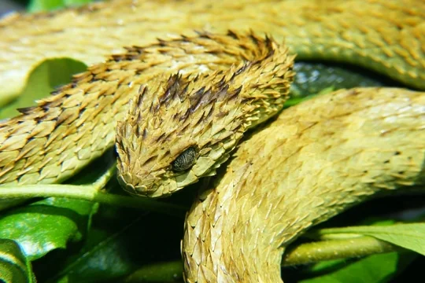
African Hairy Bush ViperAtheris hispida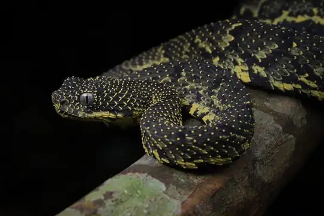
Ashe's Bush ViperAtheris desaixi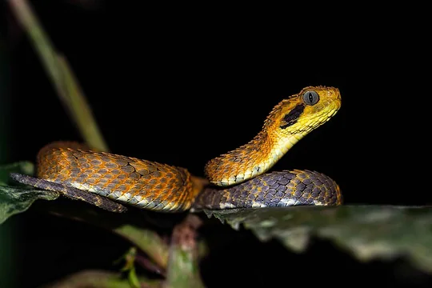
Broadley's Bush ViperAtheris broadleyi Great Lakes Bush ViperAtheris nitschei
Great Lakes Bush ViperAtheris nitschei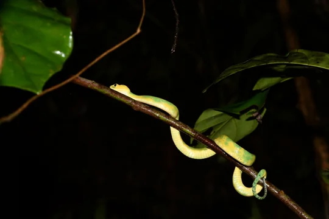
Green Bush ViperAtheris chlorechis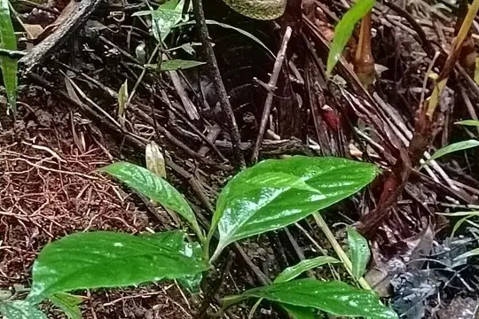
Hetfield's Bush ViperAtheris hetfieldi- No photo yetKatanga Mountain Bush ViperAtheris katangensis
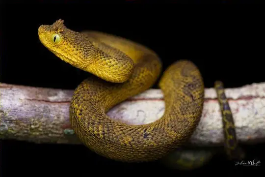
Matilda's Horned ViperAtheris matildae- No photo yetMayombe Bush-ViperAtheris anisolepis
- No photo yetMongo Hairy Bush ViperAtheris mongoensis
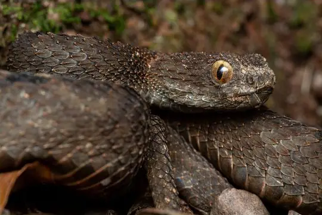
Mount Mabu Bush ViperAtheris mabuensis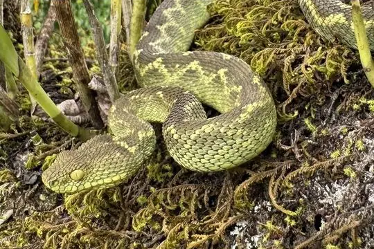
Mt Rungwe Bush ViperAtheris rungweensis- No photo yetTai Hairy Bush ViperAtheris hirsuta
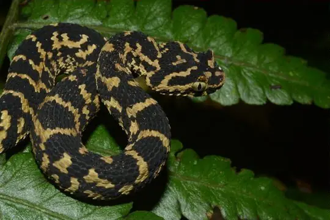
Usambara Eyelash ViperAtheris ceratophora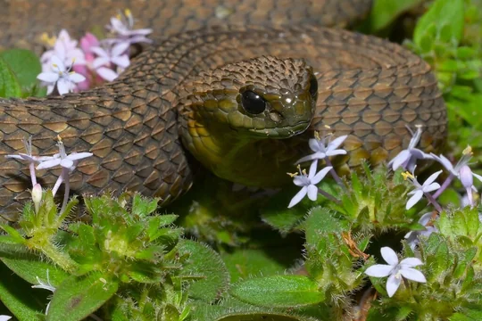
Uzungwe Mountain Bush ViperAtheris barbouri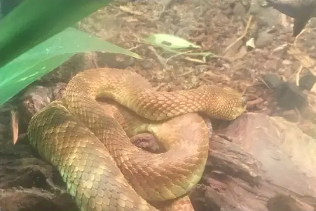
Variable Bush ViperAtheris subocularis
No snakes in Atheris match.
About the genus Atheris
- Distribution: living species recorded in 23 countries, on one continent: Africa.
- Family: Viperidae.
- Countries and territories: Angola, Burundi, Cameroon, Central African Republic, Democratic Republic of the Congo, Equatorial Guinea, Gabon, Ghana, Guinea, Ivory Coast, Kenya, Liberia, Malawi, Mozambique, Nigeria, Republic of the Congo, Rwanda, Sierra Leone, South Sudan, Tanzania, Togo, Uganda, Zambia.
Compare its species
Its living species side by side. Lengths come only from SnakeList’s reviewed, sourced accounts; the others are left blank rather than guessed.
| Species | Venom | Recorded in | Adult length (reviewed accounts) |
|---|---|---|---|
| Acuminate Bush Viper Atheris acuminata | Venomous | 1 country (Africa) | No reviewed account yet |
| African Bush Viper Atheris squamigera | Venomous | 13 countries (Africa) | No reviewed account yet |
| African Hairy Bush Viper Atheris hispida | Venomous | 4 countries (Africa) | No reviewed account yet |
| Ashe's Bush Viper Atheris desaixi | Venomous | 1 country (Africa) | No reviewed account yet |
| Broadley's Bush Viper Atheris broadleyi | Venomous | 3 countries (Africa) | No reviewed account yet |
| Great Lakes Bush Viper Atheris nitschei | Venomous | 6 countries (Africa) | No reviewed account yet |
| Green Bush Viper Atheris chlorechis | Venomous | 8 countries (Africa) | No reviewed account yet |
| Hetfield's Bush Viper Atheris hetfieldi | Venomous | 1 country (Africa) | No reviewed account yet |
| Katanga Mountain Bush Viper Atheris katangensis | Venomous | 3 countries (Africa) | No reviewed account yet |
| Matilda's Horned Viper Atheris matildae | Venomous | 1 country (Africa) | No reviewed account yet |
| Mayombe Bush-Viper Atheris anisolepis | Venomous | 2 countries (Africa) | No reviewed account yet |
| Mongo Hairy Bush Viper Atheris mongoensis | Venomous | 1 country (Africa) | No reviewed account yet |
| Mount Mabu Bush Viper Atheris mabuensis | Venomous | 1 country (Africa) | No reviewed account yet |
| Mt Rungwe Bush Viper Atheris rungweensis | Venomous | 3 countries (Africa) | No reviewed account yet |
| Tai Hairy Bush Viper Atheris hirsuta | Venomous | 3 countries (Africa) | No reviewed account yet |
| Usambara Eyelash Viper Atheris ceratophora | Venomous | 1 country (Africa) | No reviewed account yet |
| Uzungwe Mountain Bush Viper Atheris barbouri | Venomous | 1 country (Africa) | No reviewed account yet |
| Variable Bush Viper Atheris subocularis | Venomous | 1 country (Africa) | No reviewed account yet |